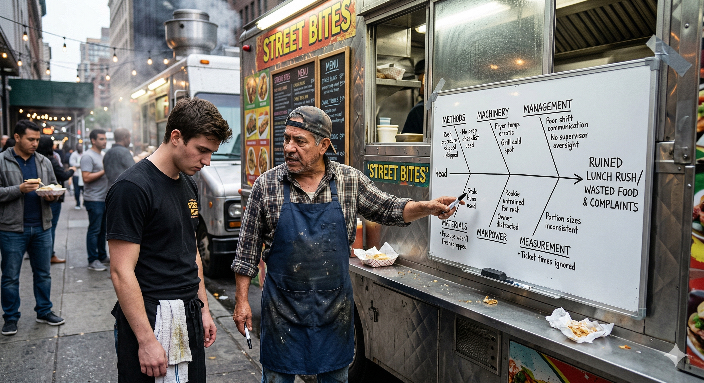

FADE IN: A food truck lot after the lunch rush. Trash blowing. CHEF RAY (50s, tattooed forearms, bandana, built the truck from nothing) stands with arms crossed, staring at a nearly full warming tray of unsold tacos. MIGUEL (20s, new cook, sauce-stained apron) shrinks against the truck. CHEF RAY You see that tray? That's two hundred dollars of food nobody bought. We served half our usual volume. The line was out to the street by noon and GONE by 12:15. You know what happened? MIGUEL The... the grill was slow? CHEF RAY The grill was ONE thing. But this wasn't one failure. This was a SYSTEM failure. And we're gonna dissect it like a fish.
Chef Ray grabs a piece of butcher paper and slaps it on the side of the truck. He draws a long horizontal arrow pointing right, with a box at the tip. CHEF RAY This arrow? That's the spine. The box at the end? That's the EFFECT — the problem we're trying to explain. Today's effect: "Lunch rush failure — 50% revenue loss." He draws six diagonal lines branching off the spine, like ribs on a fish skeleton. CHEF RAY (CONT'D) These bones? These are the CAUSE CATEGORIES. In manufacturing they call them the 6Ms. In a food truck, same thing applies: Methods, Machinery, Materials, Manpower, Measurement, and Mother Nature — which I call Management and Environment. MIGUEL That's a lot of categories. CHEF RAY That's the point. When something goes wrong, people grab the first explanation they see. "The grill was slow." But a fishbone forces you to look at EVERY category. The root cause is usually hiding in the one you didn't check.
Chef Ray writes "METHODS" on the first bone. CHEF RAY Methods means HOW we do things. Our process. Our workflow. What went wrong with our methods today? MIGUEL I... I changed the order I prepped the stations. CHEF RAY Why? MIGUEL I thought it would be faster to prep the proteins first and the toppings last. CHEF RAY And what happened? MIGUEL The toppings weren't ready when the first orders came in. So I was chopping cilantro while tickets were piling up. Chef Ray draws a sub-branch: "Prep sequence changed → toppings delayed → order backlog." CHEF RAY That's a methods failure. The process exists for a reason. You changed it without understanding the downstream dependencies. Every minute of topping delay cascaded into three minutes of order delay.
Chef Ray writes "MACHINERY" on the second bone. CHEF RAY Machinery. Equipment. Tools. What broke or underperformed? MIGUEL The flat-top grill was taking forever to heat up. CHEF RAY Because? MIGUEL I don't know. It just seemed slow. Chef Ray walks to the grill, runs his finger along the burner ports. They're clogged with grease. CHEF RAY When's the last time you cleaned the burner ports? MIGUEL (silence) CHEF RAY The ports are clogged. Gas flow is restricted. Heat output drops by maybe 30%. That means every protein takes 40% longer to cook. On a normal day, we push 80 orders in an hour. Today? Maybe 50. He draws: "Clogged burner ports → reduced heat → slower cook times → reduced throughput." CHEF RAY (CONT'D) That's not bad luck. That's a maintenance failure. Machinery doesn't fail randomly — it fails predictably when you skip the maintenance schedule.
Chef Ray writes "MATERIALS" on the third bone. CHEF RAY Materials. Ingredients. Supply quality. What came in wrong? MIGUEL The tortillas were different today. Thicker. CHEF RAY (nodding) I noticed. Our usual supplier was out, so the backup sent a different brand. Thicker tortillas take longer on the grill, absorb more sauce, and change the texture. Customers notice. He draws: "Substitute tortillas → longer grill time → taste deviation → customer complaints." CHEF RAY (CONT'D) Three people sent back tacos today. Three. In two years, I've had maybe five send-backs total. That's a materials-driven quality failure. MIGUEL But we couldn't control the supplier being out. CHEF RAY We could have controlled our RESPONSE. We should have adjusted the grill temp for thicker tortillas and modified the sauce ratio. We didn't adapt because we didn't identify the variable. That's on us.
Chef Ray writes "MANPOWER" on the fourth bone. CHEF RAY Manpower. The people. Skills, training, staffing levels. He looks at Miguel. CHEF RAY (CONT'D) No offense, kid, but you're three weeks in. You're still learning the rhythm. On a normal day, I've got Rosa on prep and you on assembly. Today, Rosa called in sick. MIGUEL So I was doing both. CHEF RAY One person doing two jobs at 70% efficiency each. That's not 140% output — that's maybe 50% of what two people produce. The throughput bottleneck wasn't just the grill. It was the human bandwidth. He draws: "Single operator → split attention → prep delays + assembly errors → reduced output." CHEF RAY (CONT'D) And here's the compounding effect: your prep delay (Methods) hit at the same time as your reduced bandwidth (Manpower). Two causes on different bones, but they INTERSECTED at the same moment. That's how small failures become big ones.
Chef Ray writes "MEASUREMENT" on the fifth bone. CHEF RAY Measurement. How do we track what's happening in real time? What metrics did we miss? MIGUEL I wasn't really tracking anything. I was just trying to keep up. CHEF RAY Exactly. On a normal day, I check the ticket time every fifteen minutes. Average should be four minutes from order to serve. If it creeps past six, I adjust — simplify the menu, pre-batch proteins, whatever it takes. He draws: "No real-time ticket monitoring → no early warning → no corrective action → full cascade." CHEF RAY (CONT'D) Today, nobody was watching the numbers. By the time we realized we were behind, the line had already bailed. Twelve customers walked away. At $14 average ticket, that's $168 in lost revenue just from the walkouts. MIGUEL We needed a thermometer for the process, not just the grill. CHEF RAY (pointing at him) Now you're getting it. Measurement is the feedback loop. Without it, you're flying blind.
Chef Ray writes "MANAGEMENT" on the sixth bone. CHEF RAY Last bone. Management and environment. The stuff above our pay grade — or in this case, the stuff I should have handled. MIGUEL Like what? CHEF RAY Like the fact that I knew Rosa might call in sick — she texted me last night that she wasn't feeling great — and I didn't line up a backup. That's a management failure. I had a leading indicator and ignored it. He draws: "No contingency staffing → single point of failure on prep → cascade." CHEF RAY (CONT'D) And environment: it's 95 degrees today. The truck's internal temp hit 115 by 11:30. Heat stress reduces cognitive performance by 15-20%. You were slower, I was slower, the equipment was hotter. Everything degraded. He draws: "Extreme heat → equipment stress + human fatigue → compound performance loss." CHEF RAY (CONT'D) Management should have anticipated the heat and adjusted: earlier start, extra water breaks, simplified menu. I didn't. That's on me.
Chef Ray steps back and looks at the full fishbone diagram on the butcher paper. CHEF RAY Now look at the whole picture. Six categories. Eleven individual causes. But they're not all equal. He circles three items. CHEF RAY (CONT'D) The ROOT causes — the ones that triggered everything else — are these three: No contingency staffing (Management), skipped burner maintenance (Machinery), and changed prep sequence (Methods). Fix those three, and most of the other failures don't happen. MIGUEL The tortillas? CHEF RAY Secondary cause. If the grill was running right and the prep was on schedule, the thicker tortillas would have been a minor adjustment, not a crisis. Context determines severity. He draws arrows from the three root causes to the other branches, showing the cascade. CHEF RAY (CONT'D) That's the power of the fishbone. It doesn't just list causes — it shows you the STRUCTURE of the failure. Which causes are roots, which are branches, and which are leaves. You fix the roots, the whole tree stabilizes.
Chef Ray tears the butcher paper off the truck and rolls it up. CHEF RAY Here's what changes starting tomorrow. One: burner ports get cleaned every night. Non-negotiable. Two: prep sequence goes back to the standard order — toppings first, proteins second. Three: I build a backup staffing list. Four: we track ticket times every ten minutes during rush. MIGUEL And the tortillas? CHEF RAY I'm calling the supplier tonight. But I'm also writing a spec sheet — thickness, diameter, moisture content — so any substitute meets our baseline. That's how you turn a materials failure into a materials STANDARD. He hands Miguel the rolled-up fishbone. CHEF RAY (CONT'D) ISO 31010, Section B.3.3. Ishikawa Diagram. Also called Cause-and-Effect Analysis. Toyota uses it to build cars. We use it to sell tacos. Same logic: trace the effect back through every possible cause category until you find the roots. MIGUEL (holding the diagram) I'll clean the burners tonight. CHEF RAY (clapping him on the shoulder) That's a start. Now help me close up. Tomorrow we run it right. They begin breaking down the truck as the sun sets over the lot. FADE OUT. — END —